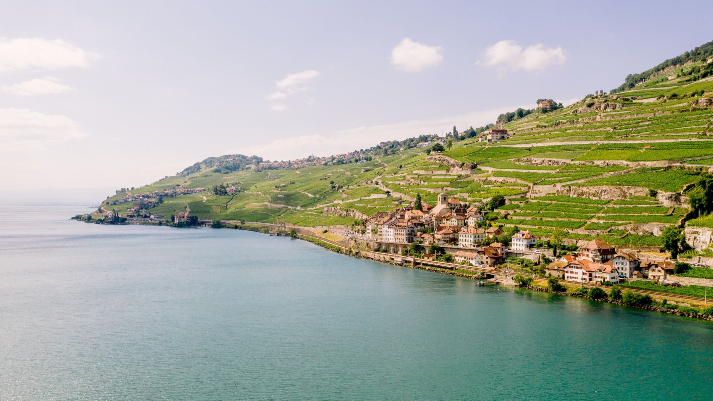

햇살이 비추는 와인 산지 생사포랑은 제네바 호수 연안에 위치해 있다.
유네스코 세계유산에 등재된 라보(Lavaux) 테라스 포도원에 둥지를 틀고 있다.
매혹적인 와인 마을 생사포랑은 라보 포도밭의 심장부, 몽펠레린(Mont Pèlerin) 언덕 기슭에 있다. 한때 산사태로 마을이 위험했기에 당국은 아케이드를 짓기로 결정했고, 그 위에 집의 정면부가 지어졌다. 생사포랑이 요새화된 마을로 알려진 것도 이 때문이다.
좁은 골목길과 자갈이 깔린 차로가
마을 중심부의 특징이다. 차로에는 와인 제조상의 집과 소박한 주택이 들어서 있다. 대다수가 이 지역의 특징적인 스타일로 지어졌다. 이 지역 집들은 석회색이 덮인 구조와 대칭적이고 화려한 전면을 특징으로 한다. 파펠플라츠(Pappelplatz)라 불리는 마을 광장은 종탑과 오베르쥬 드 롱드(Auberge
de l’Onde)가<있는 교회 등 주요 건축물로 둘러싸여 있다. 이 광장은 봄, 가을 크리스마스 시즌에 다양한 축제가 열리는 곳이기도 하다. 호수에서 기차 노선으로 구분지어지는 항구는 마을 맨 아래쪽 끝에 있다.
생사포랑은 많은 예술가들의 피란처였다. 이들은 이 마을을 자그마한 문화의 중심지로 변
모시켰다. 보(Vaud)의 가장 유명한 샹송 가수 Jean Villad Gilles는 이 마을을 고향으로 삼았다.